Rasilimali
Vifaa Vinavyoweza Kupakuliwa
- Kurasa za Mazoezi:
- Rasilimali za Sala:


Download Exam Papers

Orodha ya Vitabu
Chagua kitabu ili kujifunza zaidi kuhusu imani na teolojia ya Kikristo.
Kuhusu Sisi
Chuo cha Katekesi cha Mt. Fransisko Xsavier UDOM ni taasisi inayotoa mafunzo ya katekesi kwa wote wanaotaka kuimarisha imani yao na kuwa walimu bora wa dini.
.jpeg)
.jpeg)
.jpeg)
.jpeg)
.jpeg)
.jpeg)
.jpeg)
.jpeg) 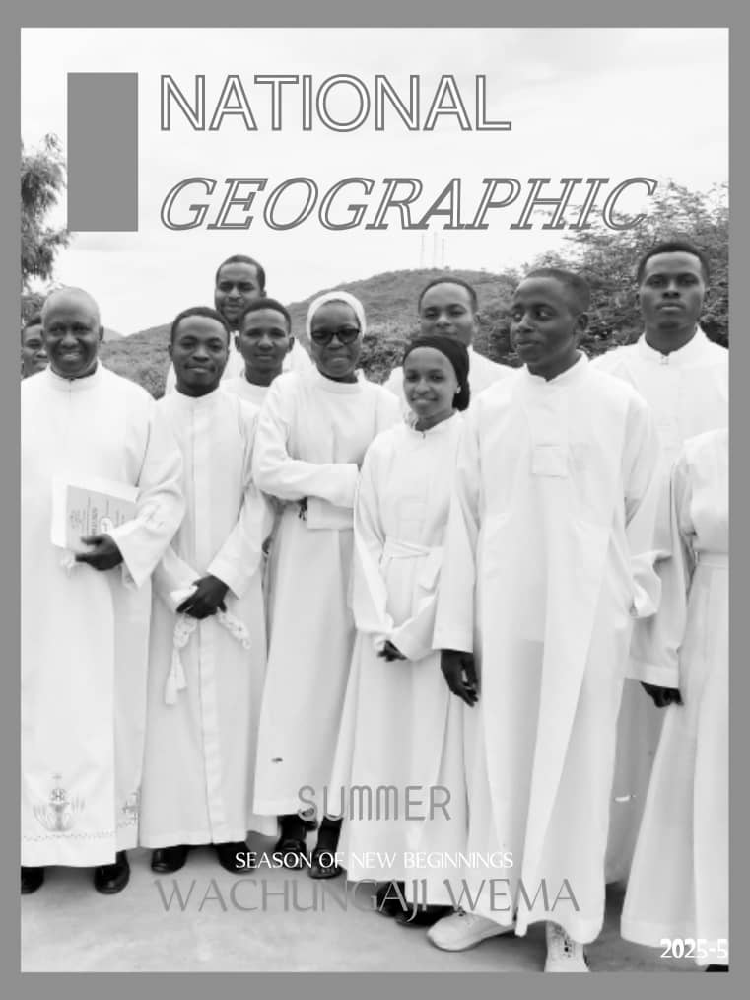
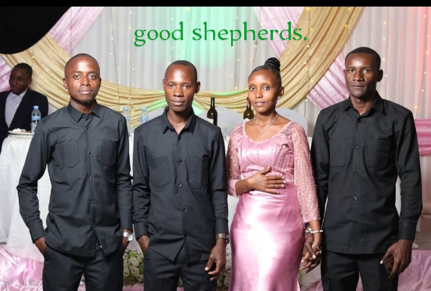
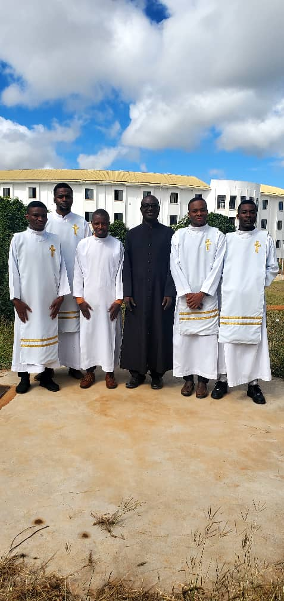
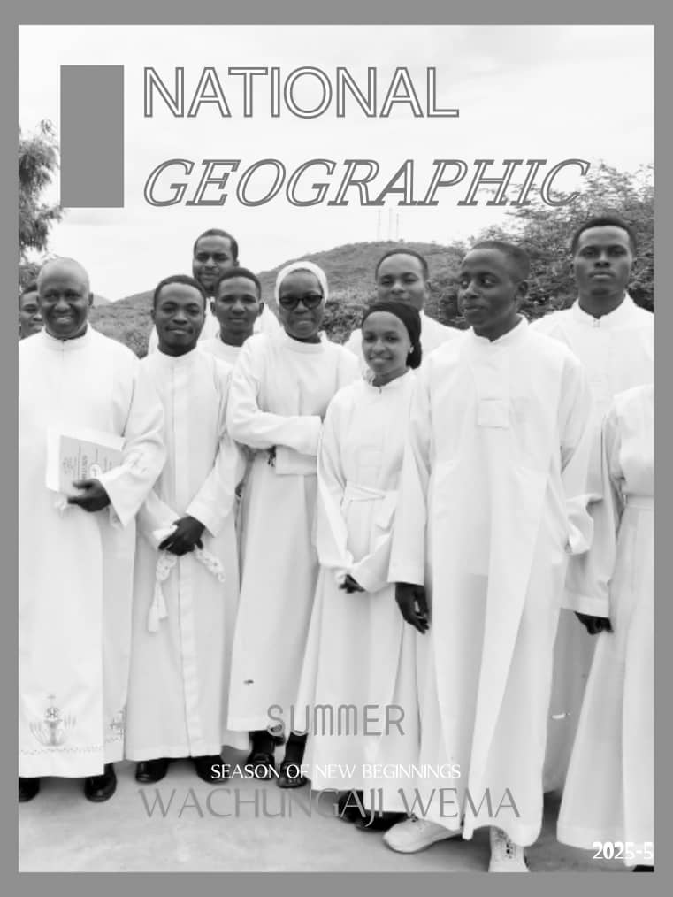
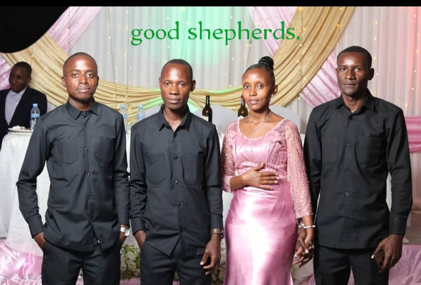
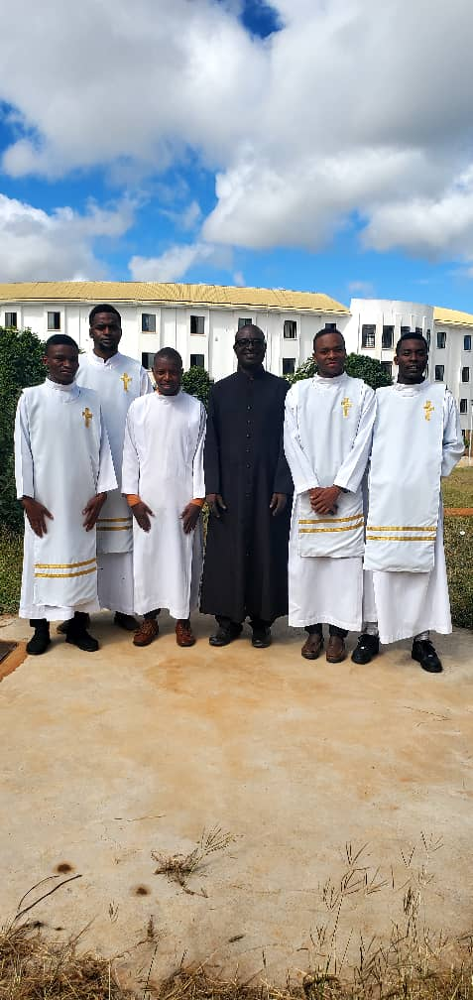
.jpeg)
.jpeg)
.jpeg)
.jpeg) 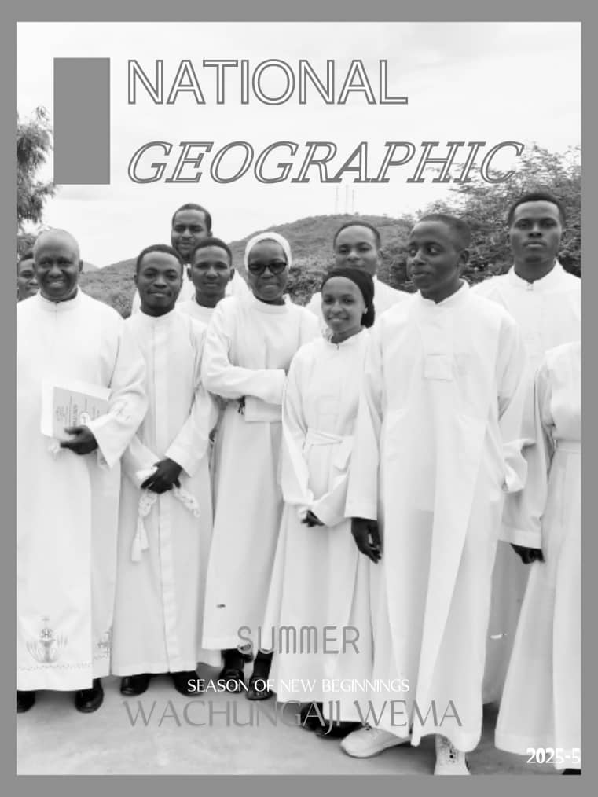
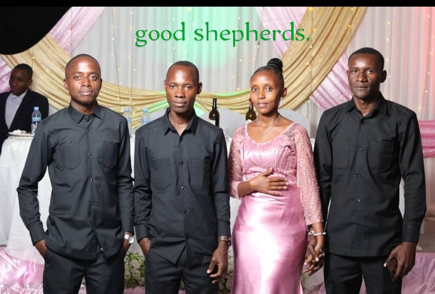
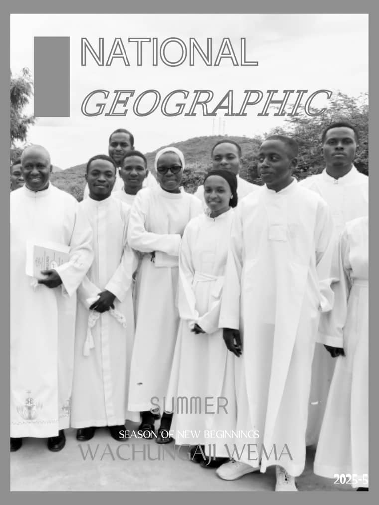
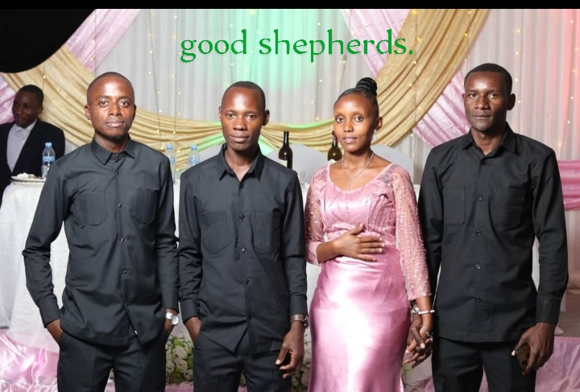
.jpeg)
.jpeg)

.jpeg) 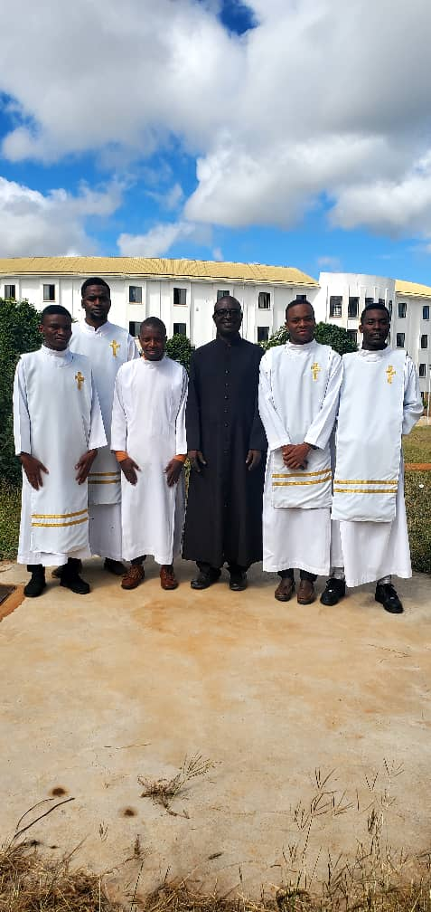
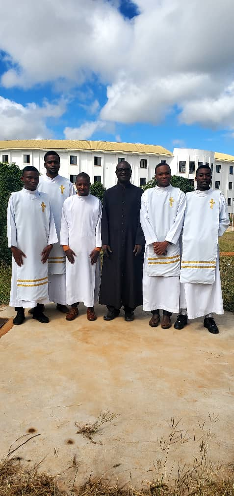
Mahali
Chuo chetu kinapatikana ndani ya mazingira ya Chuo Kikuu cha Dodoma, eneo linalotoa mazingira mazuri ya kujifunza na kukua kiroho.
Vigezo vya Kujiunga
Tunawakaribisha wanafunzi wote ambao wamepokea Sakramenti za Kipaimara, Komunio Takatifu, na Ubatizo. Nia ya kujifunza na kujitolea katika huduma ya katekesi ndio msingi mkuu.
Ada ya Mafunzo
Tunafurahi kuwajulisha kuwa kozi zetu zote zinatolewa **bure**. Lengo letu ni kuhakikisha kuwa elimu ya imani inawafikia wengi iwezekanavyo.
Uongozi wa Chuo
Mkuu wa Chuo chetu ni Paroko Msaidizi Padri Wenceslaus Rwakahaya, kiongozi mwenye uzoefu na kujitolea katika masuala ya kiroho na elimu.
Dira Yetu
Tunatamani kuwa kituo kikuu cha mafunzo ya katekesi katika kanda yetu, tukitoa elimu bora itakayowajenga viongozi wa imani wenye uwezo wa kueneza Injili kwa nguvu na upendo.
Malengo Yetu
- Kutoa mafunzo ya kina na yanayolingana na mahitaji ya jamii yetu.
- Kuandaa walimu wa katekesi wenye ujuzi, imani thabiti, na ari ya kufundisha.
- Kushirikiana na parokia na taasisi zingine za kidini kuimarisha elimu ya imani.
- Kukuza mazingira ya kujifunza yanayounga mkono ukuaji wa kiroho na kitaaluma.
Karibu Sana
Tunakukaribisha ujiunge nasi katika Chuo Kikuu cha Katekesi cha Dodoma na kuwa sehemu ya safari hii ya kujifunza na kukua katika imani.
Wasiliana Nasi
Taarifa za Mawasiliano
Chuo cha katekesi Mt. Fransisko Xsavier Dodoma,
S.L.P. [sanduku la posta],
Dodoma, Tanzania
[namba ya simu]
Masa ya Kazi: Jumatatu - Ijumaa
Tutumie Ujumbe
Padri Chrisogon Vulstan
Paroko Mkuu
Padri John ni Paroko Mkuu wa Parokia ya Mt. Fransisco Ksavery UDOM, akiongoza huduma zote za kanisa, kuendesha misa, na kuhudumia jamii ya waumini.
Padri Wenceslaus Rwakahaya
Paroko Msaidizi
Padri Wenceslaus Rwakahaya ni Paroko Msaidizi, akisaidia Paroko Mkuu katika kuendesha shughuli za kanisa na pia ndio mkuu wa chuo cha katekesi.